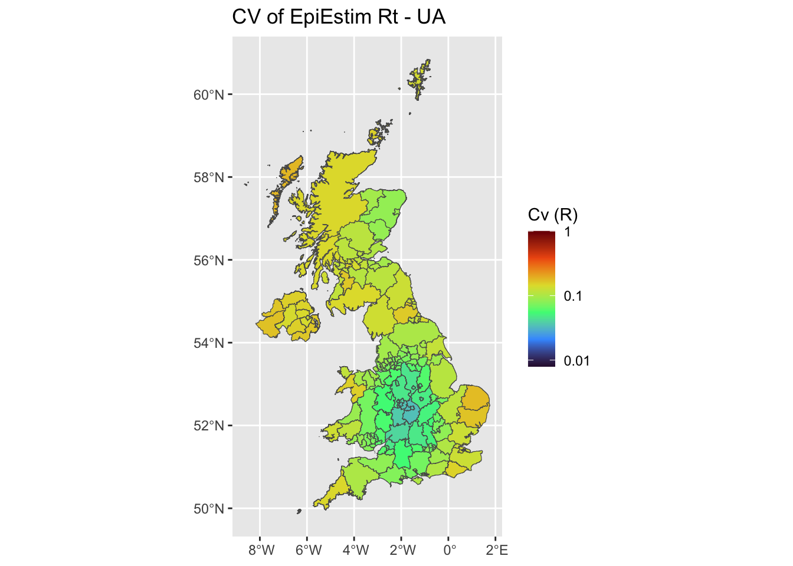
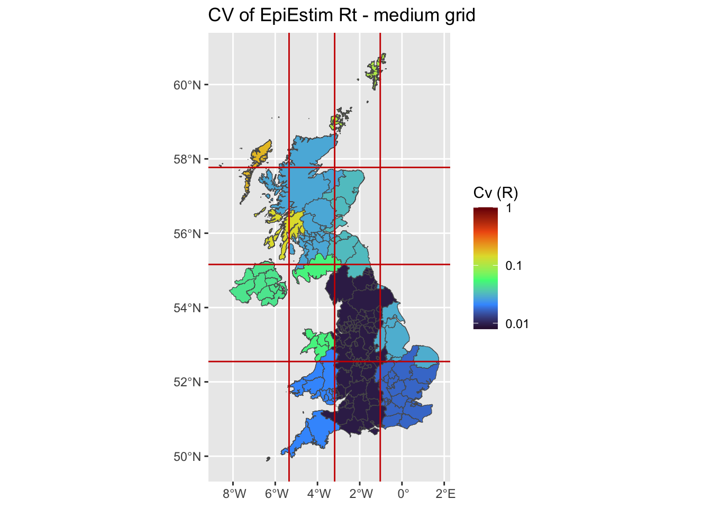

Rtglm provides a way to
To install the current stable, CRAN version of the package, type:
To benefit from the latest features and bug fixes, install the development, github version of the package using:
devtools::install_github("pnouvellet/Rtglm",build = TRUE)
devtools::install_github("pnouvellet/MCMCEpiEstim",build = TRUE)Note that this requires the package devtools installed. We then instal few additional useful package for this vignette.
rm(list=ls())
library(Hmisc)
library(EpiEstim)
library(incidence)
library(projections)
library(ggplot2)
library(Rtglm)
library(MCMCEpiEstim)
library(sf)First, we load data (from EpiEstim), e.g. the daily incidence of the 1918 influenza in Baltimore.
# load data
data <- data(Flu1918)
# make a column for local and impated cases in incidence
Flu1918$incidence <- data.frame(local = Flu1918$incidence,
imported = 0)
Flu1918$incidence$imported[1] <- Flu1918$incidence$local[1]
Flu1918$incidence$local[1] <- 0
# plot incidence
plot(rowSums(Flu1918$incidence),
main = 'Flu 1918', bty = 'n', pch = 16,
ylab = 'incidence', xlab = 'time')First, we set the prior distribution for Rt
# prior: exponential distribution with mean 1
mean_prior = 5
std_prior = 5
para_prior <- epitrix::gamma_mucv2shapescale(mu = mean_prior,cv = std_prior/mean_prior)
hist(rgamma(n = 1e3,shape = para_prior$shape, scale = para_prior$scale),
main = 'prior dist. Rt', bty = 'n',
ylab = 'dist', xlab = 'Rt' )Here we run EpiEstim using a wrapper to obtain standardized output. the wrapper is part of Rt.glm. We run EpiEstim with a 7 day time-window, with and without overlapping time-windows.
# time windows
t_window <- c(7,7)
overlap <- c(TRUE,FALSE)
# output
Rt_EpiEstim <- list()
for(i in 1:length(t_window)){
res <- Rtglm::EpiEstim_wrap(I_incid = Flu1918$incidence,
si_distr = Flu1918$si_distr,
t_window = t_window[i],
overlap = overlap[i],
mean_prior = mean_prior, std_prior = std_prior)
Rt_EpiEstim[[i]] <- res
}# output
Rt_glm <- list()
for(i in 1:length(t_window)){
res <- Rtglm::glm_Rt_wrap(I_incid = Flu1918$incidence,
si_distr = Flu1918$si_distr,
t_window = t_window[i],
overlap = overlap[i])
Rt_glm[[i]] <- res
}layout(matrix(c(1,1,1,1,2,2,2,2),nrow = 4, ncol = 2, byrow = TRUE))
for(i in 1:length(t_window)){
# plot incidence
plot(rowSums(Flu1918$incidence),
main = 'Flu1918', bty = 'n', pch = 16,
ylab = 'incidence', xlab = 'time')
# plot EpiEstim and Rt.glm estimates
a <- Rt_EpiEstim[[i]]$Rt[,c('t','Mean','low_Quantile','high_Quantile')]
b <- Rt_glm[[i]]$Rt[,c('t','Mean','low_Quantile','high_Quantile')]
res <- plot_compare2Rt(a = a, b = b,
t_window = t_window[i],
overlap = overlap[i],
Corr=TRUE)
}si <- Flu1918$si_distr
I0 <- incidence::as.incidence(x = 30, dates = 1, interval = 1)x <- 1:101
B <- 30
A <- .2
Rt <- data.frame(t = x,
Rt = A*sin((x+4)*2*pi/B)+1)
plot(Rt$t,Rt$Rt,type='l',lwd = 3,
bty = 'n', xlab = 'Rt', ylab = 'time', ylim = c(0,1.5),
xaxt='n', yaxt='n', cex.lab=1.5)
axis(side = 1, at = c(0,50,100))
axis(side = 2, at = c(0,.50,1, 1.5))
abline(h = 1,col = 'red3', lty = 2)In simulating incidence, we make use of code available in MCMCEpiEstim R-package.
set.seed(1)
res <- MCMCEpiEstim::project_fct(I0 = I0,
Rt = Rt,
n_loc = 1,
t_max = nrow(Rt),
si = si,
p = 1,
model = 'poisson')
sim_incidence <- res$I_true
plot(sim_incidence[,2],
main = 'simulated incidence', bty = 'n', pch = 16,
ylab = 'incidence', xlab = 'time')# format incidence
data <- data.frame(local = c(0,sim_incidence[2:nrow(sim_incidence),2]),
imported = c(sim_incidence[1,2],rep(0,nrow(sim_incidence)-1) ))mean_prior = 5
std_prior = 5
# time windows
t_window <- 7
overlap <- TRUE
# output
Rt_EpiEstim <- Rtglm::EpiEstim_wrap(I_incid = data,
si_distr = si,
t_window = t_window,
overlap = overlap,
mean_prior = mean_prior, std_prior = std_prior)# output
Rt_gam <- Rtglm::gam_Rt_wrap(I_incid = data,
si_distr = si)plot of incidence/Rts vs. time
layout(matrix(c(1,1,1,1,2,2,2,2),nrow = 4, ncol = 2, byrow = TRUE))
# plot incidence
plot(rowSums(data),
main = 'simulated incidence', bty = 'n', pch = 16,
ylab = 'incidence', xlab = 'time')
# plot simulated Rt
ylim <- c(0,1.5)
plot(Rt$t, Rt$Rt,type = 'l', lwd=2,
ylim = ylim,bty = 'n',
xlab = 'time',ylab = 'Rt',
main = '')
# plot EpiEstim estimates
f <- which( !is.na(Rt_EpiEstim$Rt$Mean) )
lines(Rt_EpiEstim$Rt$t[f], Rt_EpiEstim$Rt$Mean[f],col='red3')
polygon(c(Rt_EpiEstim$Rt$t[f],rev(Rt_EpiEstim$Rt$t[f])),
c(Rt_EpiEstim$Rt$low_Quantile[f],
rev(Rt_EpiEstim$Rt$high_Quantile[f])),
col = rgb(1,0,0,.1), border = NA)
# plot Rt.glm estimates
f <- which( !is.na(Rt_gam$Rt$Mean) )
lines(Rt_gam$Rt$t[f], Rt_gam$Rt$Mean[f],col='green4')
polygon(c(Rt_gam$Rt$t[f],rev(Rt_gam$Rt$t[f])),
c(Rt_gam$Rt$low_Quantile[f],
rev(Rt_gam$Rt$high_Quantile[f])),
col = rgb(0,1,0,.2), border = NA)
legend('bottomleft',legend = c('simulated','EpiEsitm','Rt.gam'),
lwd=1, col = c('black','red3','green4'), bty = 'n')We first load a ma of the Unitary Authorities of the United Kingdom.
uk <- readRDS(file = 'ukMap.rds')
class(uk)## [1] "sf" "data.frame"We use the kernel to simulate Rt
library(mvtnorm)
set.seed(1)
Rt_min_max <- data.frame(max = 2,
min = 0.5)
# spatial component of of force of infection
var_range <- c(.5,2)
# locations of 3 peak in Rt and associated variances
r_loc <- sample(x = 1:nrow(uk),size = 3,replace = TRUE)
Mus <- list(c(uk$cent.x[r_loc[1]],uk$cent.y[r_loc[1]]),
c(uk$cent.x[r_loc[2]],uk$cent.y[r_loc[2]]),
c(uk$cent.x[r_loc[3]],uk$cent.y[r_loc[3]]))
Sigmas <- runif(n = 3, min = var_range[1], max = var_range[2])
# simulate Rt
R_true <- data.frame(GID_2 = uk$GID_2,
cent.x = uk$cent.x, cent.y = uk$cent.y,
Rt = NA)
R_true$Rt <- kernel_rt(map = uk,
mu = Mus, sigma = Sigmas,
Rt_min_max = Rt_min_max)Optional plot of the true Rt
temp <- merge(uk,R_true)
ggplot(temp, aes(fill = Rt)) +
ggplot2::geom_sf() +
scale_fill_viridis_c()some useful function to backcalculate incidence expected given Rt and a total incidence.
r_2_R <- function(r){
R <- 1/sum(exp(-r*0:(length(si)-1))*si)
return(R)
}
# r_2_R(r = -0.5)
findRoot <- function(r,R){
R_check <- r_2_R(r)
return( (R_check - R)^2 )
}
# r <- optim(par = 0, fn = findRoot, method = 'BFGS', hessian=TRUE, R = 2 )$parsimulate incidence
ini_I <- I_sim <- list()
I0 <- 30
t_sim <- 5
# initialise incidence according to Rts
for (i in 1:nrow(uk)){ # do it for each locations
R <- R_true$Rt[i]
# simulate 10 previous days using growth rate (wallinga/lipsitch)
ini_r <- optim(par = 0, fn = findRoot,
method = 'BFGS',
hessian=TRUE, R = R )$par
init_t <- 10
temp <- exp(ini_r*1:init_t)
ini_I[[i]] <- incidence::as.incidence(x = round(temp/sum(temp)*I0),
dates = 1:init_t, interval = 1)
}
for (i in 1:nrow(uk)){
R <- R_true$Rt[i]
# simulate incidence
I <- as.data.frame(projections::project(x = ini_I[[i]],
R = R,
n_sim = 1, # keep at 1!
si = si[-1],
n_days = t_sim,
instantaneous_R = TRUE))
d_incidence <- data.frame(t = c(1:ini_I[[i]]$timespan,I[,1]),
incidence = c(ini_I[[i]]$counts,I[,2]))
# specify importation (e.g. the initialisation)
I_corr <- data.frame(local = d_incidence$incidence,
imported = 0)
# correct initial case as imported
I_corr$imported[1:init_t] <- d_incidence$incidence[1:init_t]
I_corr$local[1:init_t] <- 0
I_sim[[i]] <- I_corr
}res <- data.frame(matrix(NA, nrow = nrow(uk), ncol = 5))
names(res) <- c('Mean','Std',
'low_Quantile','Median','high_Quantile')
for (i in 1:nrow(uk)){
res_EE <- Rtglm::EpiEstim_sp_wrap(I_incid = I_sim[[i]],
si_distr = si,
t_ini = init_t)
res[i,] <- c(res_EE$R$Mean, res_EE$R$Std,
res_EE$R$low_Quantile, res_EE$R$Median, res_EE$R$high_Quantile)
}
names(res) <- paste0('UA_',names(res))
R_UA <- resres <- data.frame(matrix(NA, nrow = nrow(uk), ncol = 5))
names(res) <- c('Mean','Std',
'low_Quantile','Median','high_Quantile')
unique_grid <- unique(uk$grid2)
for (i in 1:length(unique_grid)){
f <- which(uk$grid2 %in% unique_grid[i])
I_corr <- I_sim[[ f[1] ]]
if(length(f)>1){
for(l in 2:length(f)){
I_corr <- I_corr+I_sim[[ f[l] ]]
}
}
resEE <- Rtglm::EpiEstim_sp_wrap(I_incid = I_corr,
si_distr = si,
t_ini = init_t)
res[f,] <- matrix(data = c(resEE$R$Mean, resEE$R$Std,
resEE$R$low_Quantile, resEE$R$Median,
resEE$R$high_Quantile), nrow = length(f), ncol = 5,
byrow = TRUE)
}
names(res) <- paste0('grid_',names(res))
R_grid <- resres_gam <- gam_Rt_sp_wrap(I_incid = I_sim,
si_distr = si,
x=uk$cent.x,
y=uk$cent.y)
res <- res_gam$Rt[,-1]
names(res) <- paste0('gam_',names(res))
R_gam <- resuk <- st_sf(cbind(uk,
R_UA,
R_grid,
R_gam))
temp <- R_true[,c(1,4)]
names(temp)[2] <- 'R'
uk <- merge(uk,temp)ggplot(uk, aes(fill = R)) +
ggplot2::geom_sf() +
ggtitle('Simulated Rt')+
scale_fill_viridis_c(limits = c(0, 3),name = 'R',option = 'H') ggplot(uk, aes(fill = UA_Mean)) +
ggplot2::geom_sf() +
ggtitle('EpiEstim Rt - UA')+
scale_fill_viridis_c(limits = c(0, 3),name = 'R',option = 'H') limits_x <- seq(min(uk$cent.x),max(uk$cent.x),length.out = 5)
limits_y <- seq(min(uk$cent.y),max(uk$cent.y),length.out = 5)
ggplot(uk, aes(fill = grid_Mean)) +
ggplot2::geom_sf() +
ggtitle('EpiEstim Rt - medium grid') +
scale_fill_viridis_c(limits = c(0, 3),name = 'R',option = 'H') +
geom_vline(xintercept=limits_x[-c(1,length(limits_x))], linetype="solid",col='red3')+
geom_hline(yintercept=limits_y[-c(1,length(limits_x))], linetype="solid",col='red3') ggplot(uk, aes(fill = gam_Mean)) +
ggplot2::geom_sf() +
ggtitle('GAM Rt') +
scale_fill_viridis_c(limits = c(0, 3),name = 'R',option = 'H') uk$UA_cvL <- log10(uk$UA_Std/uk$UA_Mean)
uk$grid_cvL <- log10(uk$grid_Std/uk$grid_Mean)
uk$gam_cvL <- log10(uk$gam_Std/uk$gam_Mean)
# range(c(temp$UA_cvL ,
# temp$grid_cvL ,
# temp$gam_cvL))
ggplot(uk, aes(fill = UA_cvL)) +
ggplot2::geom_sf() +
ggtitle('CV of EpiEstim Rt - UA')+
scale_fill_viridis_c(limits = c(-2.1,0),name = 'Cv (R)',option = 'H') 
ggplot(uk, aes(fill = grid_cvL)) +
ggplot2::geom_sf() +
ggtitle('CV of EpiEstim Rt - medium grid') +
scale_fill_viridis_c(limits = c(-2.1,0),name = 'Cv (R)',option = 'H') +
geom_vline(xintercept=limits_x[-c(1,length(limits_x))], linetype="solid",col='red3')+
geom_hline(yintercept=limits_y[-c(1,length(limits_x))], linetype="solid",col='red3') 
ggplot(uk, aes(fill = gam_cvL)) +
ggplot2::geom_sf() +
ggtitle('CV of Gam Rt') +
scale_fill_viridis_c(limits = c(-2.1,0),name = 'Cv (R)',option = 'H',
breaks = c(-3,-2,-1,0), labels = 10^c(-3,-2,-1,0))